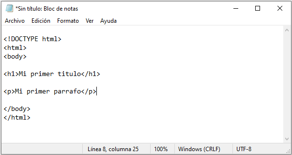

Introducción a HTML
HTML es el lenguaje de marcado estándar para crear páginas web.
¿Que es HTML?
- HTML significa lenguaje de marcado de hipertexto
- HTML es el lenguaje de marcado estándar para crear páginas web.
- HTML describe la estructura de una página Web
- HTML consta de una serie de elementos
- Los elementos HTML le dicen al navegador cómo mostrar el contenido
- Los elementos HTML etiquetan piezas de contenido como "este es un encabezado", "este es un párrafo", "este es un enlace", etc.
Un documento HTML simple
Ejemplo
<!DOCTYPE html>
<html>
<head>
<title> Titulo de pagina </title>
</head>
<body>
<h1> Mi primer titulo </h1>
<p> Mi primer párrafo. </p>
</body>
</html>
Editores HTML
Un simple editor de texto es todo lo que necesita para aprender HTML.
Aprenda HTML usando el Bloc de notas o TextEdit
Las páginas web se pueden crear y modificar utilizando editores HTML profesionales. Sin embargo, para aprender HTML recomendamos un editor de texto simple como Notepad (PC) o TextEdit (Mac). Creemos que usar un editor de texto simple es una buena manera de aprender HTML. Siga los pasos a continuación para crear su primera página web con Notepad o TextEdit.
Requisitos necesarios
Usted solo necesitas algunas cosas para comenzar su camino como desarrollador.
- Un ordenador con sistema operativo Windows, Linux, Mac, Etc.
- Y muchas ganas de aprender y crear soluciones practicas!
Paso 1: Abra el Bloc de notas (Windows)
Windows 8 o posterior:
Abra la pantalla de inicio (el símbolo de la ventana
en la parte inferior izquierda de su pantalla). Escribe
Bloc de notas.
Windows 7 o anterior:
Abra Inicio > Programas > Accesorios > Bloc de notas
Paso 1: abre TextEdit (Mac)
Abre Finder > Aplicaciones > TextEdit
También cambie algunas preferencias para que la aplicación guarde los
archivos correctamente. En
Preferencias > Formato > elija
"Texto sin formato"
Luego, en "Abrir y guardar", marque la casilla que dice "Mostrar
archivos HTML como código HTML en lugar de texto formateado".
Luego abra un nuevo documento para colocar el código.
Paso 2: escribir algo de HTML
Escriba o copie el siguiente código HTML en el Bloc de notas o TextEdit.
<!DOCTYPE html>
<html>
<head>
<title> Titulo de pagina </title>
</head>
<body>
<h1> Mi primer titulo </h1>
<p> Mi primer párrafo. </p>
</body>
</html>
Debería quedar algo como esto...
Paso 3: Guarde la pagina HTML
Guarde el archivo en su computadora. Seleccione
Archivo > Guardar como en el menú Bloc de notas.
Nombre el archivo "index.htm" y establezca la
codificación en UTF-8 (que es la codificación
preferida para los archivos HTML).
Paso 4: Vea la pagina HTML en su navegador
Abra el archivo HTML guardado en su navegador favorito (haga doble
clic en el archivo o haga clic con el botón derecho y elija "Abrir
con").
El resultado se parecerá mucho a esto:
HTML Básico
Ejemplos básicos de HTML
En este capítulo mostraremos algunos ejemplos básicos de HTML.
No se preocupe si usamos etiquetas que aún no conoce.
Documentos HTML
Todos los documentos HTML deben comenzar con una declaración de tipo
de documento: <!DOCTYPE html>.
El documento HTML en sí comienza <html> y termina con
</html>.
La parte visible del documento HTML está entre <body> y </body>.
Ejemplo
<!DOCTYPE html>
<html>
<head>
<title> Titulo de pagina </title>
</head>
<body>
<h1> Mi primer titulo </h1>
<p> Mi primer párrafo. </p>
</body>
</html>
¿Cómo ver la fuente HTML?
¿Alguna vez has visto una página web y te has preguntado "¡Oye! ¿Cómo hicieron eso?
Ver código fuente HTML
Haga clic derecho en una página HTML y seleccione "Ver código fuente" (en Chrome) o "Ver código fuente" (en Edge), o similar en otros navegadores. Esto abrirá una ventana que contiene el código fuente HTML de la página.
inspeccionar un elemento HTML
Haga clic derecho en una página HTML y seleccione "Ver código fuente" (en Chrome) o "Ver código fuente" (en Edge), o similar en otros navegadores. Esto abrirá una ventana que contiene el código fuente HTML de la página.
Elementos HTML
Un elemento HTML se define mediante una etiqueta de inicio, algo de contenido y una etiqueta de finalización.
Elementos HTML
El elemento HTML es todo, desde la etiqueta de inicio
hasta la etiqueta final:
<h1> Mi primer encabezado < /h1>
La etiqueta de apertura seria: <h1>
El contenido seria: "Mi primer encabezado"
Y la etiqueta de cierre seria: < /h1>
Elementos HTML anidados
Los elementos HTML se pueden anidar (esto significa que los elementos
pueden contener otros elementos). Todos los documentos HTML constan de
elementos HTML anidados.
El siguiente ejemplo contiene cuatro elementos HTML anidados (<html>, <body>, <h1> y <p>)
Ejemplo
<!DOCTYPE html>
<html>
<head>
<title> Titulo de pagina </title>
</head>
<body>
<h1> Mi primer titulo </h1>
<p> Mi primer párrafo. </p>
</body>
</html>
Atributos HTML
Los atributos HTML proporcionan información adicional sobre los elementos HTML.
Atributos HTML
- Todos los elementos HTML pueden tener atributos.
- Los atributos proporcionan información adicional sobre los elementos.
- Los atributos siempre se especifican en la etiqueta de inicio.
- Los atributos generalmente vienen en pares de nombre/valor como: nombre="valor".
El atributo src
La <img> etiqueta se utiliza para incrustar una imagen
en una página HTML. El src atributo especifica la ruta a
la imagen que se va a mostrar:
Ejemplo
<img src="imagen.jpg" alt="Es una imagen">
Hay dos formas de especificar la URL en el src atributo:
1. URL absoluta: enlaces a una imagen externa alojada
en otro sitio web. Ejemplo:
src="https://www.pagina-de-internet.com/images/imagen.jpg".
Notas: las imágenes externas pueden estar protegidas
por derechos de autor. Si no obtiene permiso para usarlo, es posible
que esté violando las leyes de derechos de autor. Además, no puede
controlar imágenes externas; se puede quitar o cambiar repentinamente.
2. URL relativa: Enlaces a una imagen alojada en el
sitio web. Aquí, la URL no incluye el nombre de dominio. Si la URL
comienza sin una barra inclinada, será relativa a la página actual.
Ejemplo: src="imagen.jpg". Si la URL comienza con una barra inclinada,
será relativa al dominio. Ejemplo: src="/images/imagen.jpg".
Sugerencia: Casi siempre es mejor usar URL relativas.
No se romperán si cambias de dominio.
Referencia
Toda la documentación obtenida y volcada en esta pagina fue tomada de
W3 Schools.
Para obtener toda la información acerca de HTML, y otras tecnologías de
desarrollo de software, consulta su pagina.
Los iconos utilizados son de
flaticon.